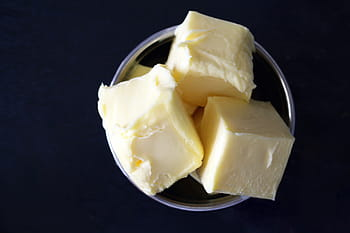
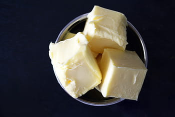

Pasos a seguir:
- Precalienta el horno a 180ºC.
- Primero, tienes que mezclar el azúcar (tanto el moreno, como el blanco) junto a la mantequilla y la vainilla.
- Una vez se hayan integrado todos los ingredientes, tienes que integrar a la masa el huevo y la yema. Remueve hasta conseguir una mexcla homogénea.
- Añade la sal, la harina y la levadura. Mezcla todos los ingredientes bien.
- Cuando la masa este lista, añade las pepitas de chocolate. Si no tienes pepitas, puedes partir una tableta de chocolate en trocitos pequeños.
- haz pequeñas bolitas con la masa y ponlas en una bandeja (pon harina en la bandeja para que no se pegue la masa).
- Mete la bandeja en el horno por media hora.
 
